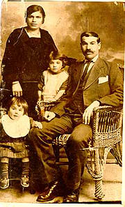

|
@yz ynk ov.argovm mi ov,acraw
badmov;3ovn` orbys badasqan ;iw 3, 4
¦ 5
harxatrovmnyri1 Myr gar/ikow a3s ha3 undaniki anxa/ ov.in
hadgan,agan e a3=m C3ovmriovm hasdadwa/ pazma;iw
undaniknyri hamar1 Daryx martov badma/u nyrga3axnovm ynk
sdor¦³
Hov,yri g/ig
Armadnyrs cnovm yn ,ad hy-ov7 Ar¦md3an
Ha3asdan5 a3n ar3ovnod =amanagnyru5 yrp /no.u gorxnovm er
yryqanyrin5 yrp ha3u kamov pyrann unga/ dyr¦i nman
k,wovm er ancov; kaminyri go.mix³

Howhannys }alla;3ani
undanygan lovsangaru5 ;wacrwa/ 1928 |
|
Ha3rs` Howhannys Cricori
}alla;3anu5 /nwa/ 1885 ;7
Ytysia ¥nyrga3ovms` Ovrfa» ka.akovm5 19136in
;ovrkagan zorago[ix qov3s dalov nbadagow ‘aq[ovm e
Siria1 Ovrfa3i hyrosamardovm zohwovm e hors o.]
cyrtasdanu1 Hra,kow ‘rgwovm e mia3n y.pa3ru`
Hagopu5 orin a3tbys el [i garo.anovm
cdnyl1 Ha3rs mahaxaw 1959 ;wi
abrili 246in Ha3asdanovm1
Hydaca3ovm d.as /nwyx abrili 246in1
Darinyr hydo badahmamp imaxank5 or jagadaciru hory.pors
hasxryl er Ganata5 ordy. hima abrovm yn nra zawagnyru`
2 a.]ig` Alisu ¦ Sirwartu ¦
d.an` Cricoru5 oronk ovnyn zawagnyr ¦ ;o-nyr1 19806in
Sirwartu myz a3xi ygaw Ha3asdan1 Timaworyxink 8Zwar;nox9
0tanawaga3anovm1 <ad hovzi[ bahyr abryxink5 qorabys
laxink ¦ qntaxink1
Ca.; a-a]in
Ma3rs` :acovhi Ipyg3anu5 /nwa/
18886in :ovrkia3i Arapgir ka.akovm519146in
tybi Siria p-naca.;man =amanag Dyrzor cnaxo. Karawanix mi
gyrb ‘aq[ovm e Halyb` myg darygan a.]nagu crgin1 "okrigu
janabarhin sowix mahanovm e1
Ca.; yrgrort
Siriagan ga-awarov;3an hramanow ha3
ca.;agannyri hamar hadgaxwovm e ho.adara/ov;3ovn :ovrkia3i
¦ Siria3i sahmanac/in` pnagawa3r himnylov hamar119206in
ha3rs ov ma3rs amovsnanalow cnovm yn a3t nor pnagawa3ru mi
100 undaniki hyd1 A3t ho.agdoru
go[wovm er Sanjaq1 A3ndy. a3s 100
undaniku ga-ovxovm yn nor c3ov. ¦
anwanovm Ha3a,yn1 A3sdy. /nwovm yn 3
kov3ryrs ¦ ys`19326in1
19206ix min[¦ 1938
;iwu pnagwyl ynk Ha3a,ynovm1
Gnkama3rs y.yl e a3t c3ov.i tbroxi miag ovsovx[ovhin`
Anahid "y,dima3anu1 A.od hi,ovm ym myr ;a.u5 hsga
cydu5 oru pqovm ¦ sgizp er a-novm =a3-i dagix5 myr
dovnu5 tbroxu5 a3cinyru5 myr gowyru5 2in ¦ a3ln1
1938 ;win Sirian myz anha3d
badja-nyrow a3t dara/knyru dwyx ;ovrkagan
i,qanov;3ovnnyrin1 Fransiagan ga-awarov;3an ¦ Halybi
my] cor/o. Ha3 Hy.a’oqagan Ta,nagxov;3an5 na¦
Hn[ag3an govsagxov;3an ]ankyrow c3ov. ygan py-nadarnyr ¦
hrama3wyx my/ ov ‘okrin` in[ hnarawor e wyrxnylow
dy.aworwyl mykynanyrovm1 "okr ei5 pa3x a3t sarsa’yli
ca.;u hi,ovm ym in[bys mi ahy. m.2awan]³ Lkyl5
hy-anal a3n pnagawa3rix5 ordy. /nwyl ys5 ordy. dovn ov dy.
e ga-ovxyl ha3rt1 Lalis5 /ngnyrin ein q’ovm ma3rs5
ha3rs5 c3ov.i o.] =o.owovrtu1 Myz pyryxin Halyb ¦
pa=anyxin tbroxnyri ov a3l ,inov;3ovnnyri wra1 Hydaca3ovm
ha3rs dovn war2yx ha3azci Y.ia Myn/0.l3an anovnow
corcacor/i danu1 Dandyrn ovnyr yrgov a.]ig ¦ myg d.a1
19816in5 yrp cnaxi Halyb5 myr
dan dy.u my/ ,ynk ein ga-ovxyl5 hantibyxi myr hin dandiro]
zawagnyrin ¦ hi,yxink myr mangov;3ovnu5 Gilig3an
war=aranovm myr sowora/ darinyru1
Janabarh tybi Ha3rynik
Ka3lir karawan5 in2 hydt kar, dovr³
1946 ;iw³ Awardwyl er
Ha3rynagan My/ badyrazmu ¦ Ha3rynik ca.;ylu tar2yl er
hnarawor1 A-anx yrgmdylov ha3rs p-nyx Ha3ryniki jam’an5
ca.;yxink Ha3rynik³
Halybix norix py-nadar mykynanyrow
dy.a’oqwyxink Lipanan5 nawahancisd1 Yrgov ,apa;
sbasyxink5 wyr]abys ygaw 8Dranssilwania9 nawu1 Par2raxank
naw ¦ 3 0r Mi]yrgragan ov
S¦ /owyrow5 an2r¦i5 kamov ov ‘o;orgi
ov.ygxov;3amp 46rt 0ru hasank
Pa;ovmi nawahancisd1 A3ndy.ix el py-nadar cnaxkow 4-5
0rovm hasank Lyninagan ¥C3ovmri»1
Myz timaworyxin yrc ov barow5 )fyl3a Hampar2ovm3ani
yrc[aqmpow1 <ad ovraq eink5 [na3a/ or artyn zcaxyl
eink5 or nor badyrazmix tovrs yga/ ‘okrig Ha3asdanu5
gisasowa/5 xnxodinyrow /a/gwa/ myr ha3rynagixnyru ,ad /anr
ov t=war =amanagnyr yn timacrawyl1 Pa3x ovraq eink5
orowhyd¦5 hors qoskyrow asa/` 8A3sdy. e ha3i dy.u5
Ha3ryniku1 Sa wyr]in ca.;n e5 d.as91
Lyninaganovm5 naqgin sa-narani
cor/arani dy.ovm bahysdnyr ga3in1 Myz i]yxrin a3ndy. ¦
hax pa=anyxin1 <ovdow ygaw mi py-nadar ¦ myz daraw
8Slapotga9 go[wa/ ;a.amasi 28 ‘o.ox5
C3ovmryxi {adrynx C¦ori dovn1 Yrgov dari abryxink a3t
h3ovrungal 0]aqovm5 min[¦ sarkyxink myr dovnu
Kov;a3is3an ‘o.oxi ;iw
54 hasxyow5 ovr ¦ abrovm
ynk a- a3s0r1 19486in awardyxi
yrga;c/i ovsovmnaranu1 A,qadyxi 8Garmir No3ympyr9
cor/aranovm orbys h3ovsn1 1950 ;wix
a,qadyxi covlba3i fapriga3ovm ipr¦ mykynawar
mia=amanag soworylow ;iw 12 yrygo3an
tbroxovm1 A3novhyd¦ a,qadyxi corcacor/agan
fapriga3ovm5 isg 19676ix orbys
a,qadanki ovsovxi[ a,qadanki anxa Wahan Dyr3ani anwan ;iw
15 tbroxovm5 ovr ¦
a,qadovm ym1
C3ovmrii ;iw 15
tbroxi a,agyrdnyr |